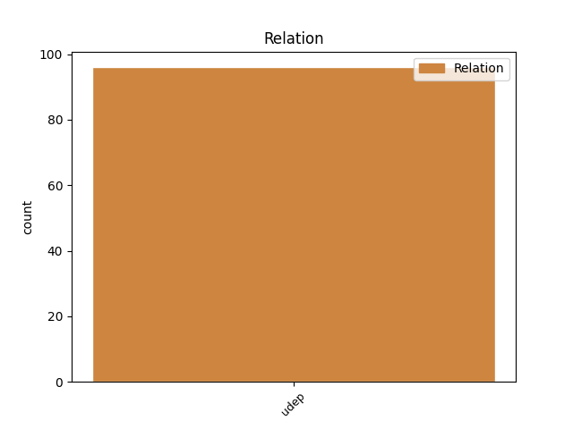
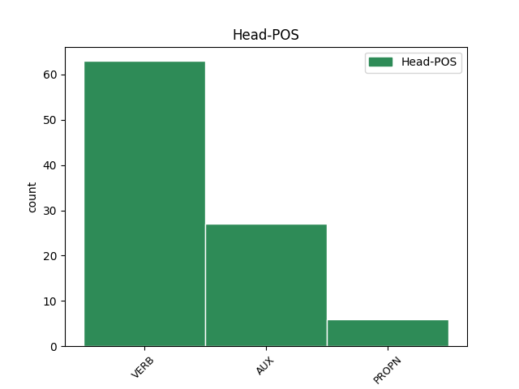
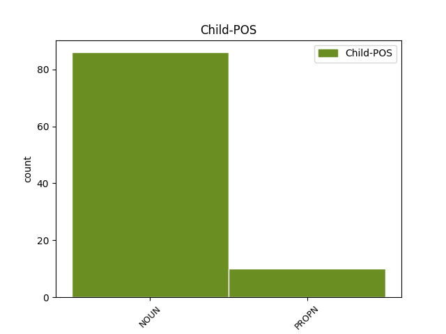

Distribution of features within this leaf



Agreement Rules sorted by frequency.
- When the dependent token is the underspecified dependency(udep) of the head token, and the head token is VERB and the dependent token is NOUN.
1 Maar _ _ _ _ 0 _ _ _
2 de _ _ _ _ 0 _ _ _
3 studie _ _ _ _ 0 _ _ _
4 en _ _ _ _ 0 _ _ _
5 onderzoek _ _ _ _ 0 _ _ _
6 die _ _ _ _ 0 _ _ _
7 dit _ _ _ _ 0 _ _ _
8 vergde _ _ _ _ 0 _ _ _
9 kostte kosten VERB WW|pv|verl|ev Number=Sing|Tense=Past|VerbForm=Fin 0 _ _ _
10 Herge _ _ _ _ 0 _ _ _
11 een _ _ _ _ 0 _ _ _
12 enorme _ _ _ _ 0 _ _ _
13 hoeveelheid hoeveelheid NOUN N|soort|ev|basis|zijd|stan Gender=Com|Number=Sing 9 udep _ _
14 werk _ _ _ _ 0 _ _ _
15 , _ _ _ _ 0 _ _ _
16 waar _ _ _ _ 0 _ _ _
17 hij _ _ _ _ 0 _ _ _
18 geestelijk _ _ _ _ 0 _ _ _
19 zelfs _ _ _ _ 0 _ _ _
20 bijna _ _ _ _ 0 _ _ _
21 aan _ _ _ _ 0 _ _ _
22 onderdoor _ _ _ _ 0 _ _ _
23 ging _ _ _ _ 0 _ _ _
24 . _ _ _ _ 0 _ _ _
1 Andere _ _ _ _ 0 _ _ _
2 theorieën _ _ _ _ 0 _ _ _
3 laten _ _ _ _ 0 _ _ _
4 het _ _ _ _ 0 _ _ _
5 paneel _ _ _ _ 0 _ _ _
6 ondertussen _ _ _ _ 0 _ _ _
7 lang _ _ _ _ 0 _ _ _
8 opgenomen _ _ _ _ 0 _ _ _
9 zijn _ _ _ _ 0 _ _ _
10 in _ _ _ _ 0 _ _ _
11 een _ _ _ _ 0 _ _ _
12 privé-collectie _ _ _ _ 0 _ _ _
13 , _ _ _ _ 0 _ _ _
14 doch _ _ _ _ 0 _ _ _
15 het _ _ _ _ 0 _ _ _
16 spreekt _ _ _ _ 0 _ _ _
17 vanzelf _ _ _ _ 0 _ _ _
18 dat _ _ _ _ 0 _ _ _
19 dit _ _ _ _ 0 _ _ _
20 werk _ _ _ _ 0 _ _ _
21 nooit _ _ _ _ 0 _ _ _
22 publiek publiek NOUN N|soort|ev|basis|onz|stan Gender=Neut|Number=Sing 24 udep _ _
23 verkoopbaar _ _ _ _ 0 _ _ _
24 zal zullen AUX WW|pv|tgw|ev Number=Sing|Tense=Pres|VerbForm=Fin 0 _ _ _
25 zijn _ _ _ _ 0 _ _ _
26 . _ _ _ _ 0 _ _ _
1 Andere _ _ _ _ 0 _ _ _
2 oorlogsmonumenten _ _ _ _ 0 _ _ _
3 zijn _ _ _ _ 0 _ _ _
4 een _ _ _ _ 0 _ _ _
5 herdenkingszuil _ _ _ _ 0 _ _ _
6 voor _ _ _ _ 0 _ _ _
7 Amerikaanse _ _ _ _ 0 _ _ _
8 infanteriesoldaten _ _ _ _ 0 _ _ _
9 die _ _ _ _ 0 _ _ _
10 in _ _ _ _ 0 _ _ _
11 de _ _ _ _ 0 _ _ _
12 Eerste _ _ _ _ 0 _ _ _
13 Wereldoorlog _ _ _ _ 0 _ _ _
14 in _ _ _ _ 0 _ _ _
15 Oudenaarde _ _ _ _ 0 _ _ _
16 de _ _ _ _ 0 _ _ _
17 Schelde _ _ _ _ 0 _ _ _
18 overstaken _ _ _ _ 0 _ _ _
19 en _ _ _ _ 0 _ _ _
20 het _ _ _ _ 0 _ _ _
21 monument _ _ _ _ 0 _ _ _
22 van _ _ _ _ 0 _ _ _
23 Tacambaro _ _ _ _ 0 _ _ _
24 op _ _ _ _ 0 _ _ _
25 het _ _ _ _ 0 _ _ _
26 gelijknamige _ _ _ _ 0 _ _ _
27 plein _ _ _ _ 0 _ _ _
28 , _ _ _ _ 0 _ _ _
29 opgericht _ _ _ _ 0 _ _ _
30 ter _ _ _ _ 0 _ _ _
31 nagedachtenis _ _ _ _ 0 _ _ _
32 van _ _ _ _ 0 _ _ _
33 enkele _ _ _ _ 0 _ _ _
34 tientallen _ _ _ _ 0 _ _ _
35 Oudenaardenaren _ _ _ _ 0 _ _ _
36 die _ _ _ _ 0 _ _ _
37 in _ _ _ _ 0 _ _ _
38 de _ _ _ _ 0 _ _ _
39 Mexicaanse _ _ _ _ 0 _ _ _
40 vrijheidsoorlog _ _ _ _ 0 _ _ _
41 omkwamen _ _ _ _ 0 _ _ _
42 en _ _ _ _ 0 _ _ _
43 bestaande _ _ _ _ 0 _ _ _
44 uit _ _ _ _ 0 _ _ _
45 een _ _ _ _ 0 _ _ _
46 liggende _ _ _ _ 0 _ _ _
47 vrouw _ _ _ _ 0 _ _ _
48 die _ _ _ _ 0 _ _ _
49 richting richting NOUN N|soort|ev|basis|zijd|stan Gender=Com|Number=Sing 50 udep _ _
50 Mexico Mexico PROPN N|eigen|ev|basis|onz|stan Gender=Neut|Number=Sing 0 _ _ _
51 blikt _ _ _ _ 0 _ _ _
52 . _ _ _ _ 0 _ _ _
1 Ook _ _ _ _ 0 _ _ _
2 het _ _ _ _ 0 _ _ _
3 grasseizoen _ _ _ _ 0 _ _ _
4 begint _ _ _ _ 0 _ _ _
5 goed _ _ _ _ 0 _ _ _
6 , _ _ _ _ 0 _ _ _
7 voor _ _ _ _ 0 _ _ _
8 de _ _ _ _ 0 _ _ _
9 eerste _ _ _ _ 0 _ _ _
10 keer _ _ _ _ 0 _ _ _
11 wint winnen VERB WW|pv|tgw|met-t Number=Sing|Tense=Pres|VerbForm=Fin 0 _ _ _
12 ze _ _ _ _ 0 _ _ _
13 het _ _ _ _ 0 _ _ _
14 drukbezette _ _ _ _ 0 _ _ _
15 Eastbourne-toernooi Eastbourne-toernooi PROPN N|eigen|ev|basis|onz|stan Gender=Neut|Number=Sing 11 udep _ SpaceAfter=No
16 . _ _ _ _ 0 _ _ _
1 Parijs-Roubaix _ _ _ _ 0 _ _ _
2 wordt _ _ _ _ 0 _ _ _
3 soms _ _ _ _ 0 _ _ _
4 vergeleken _ _ _ _ 0 _ _ _
5 met _ _ _ _ 0 _ _ _
6 die _ _ _ _ 0 _ _ _
7 andere _ _ _ _ 0 _ _ _
8 kasseiklassieker _ _ _ _ 0 _ _ _
9 : _ _ _ _ 0 _ _ _
10 de _ _ _ _ 0 _ _ _
11 Ronde _ _ _ _ 0 _ _ _
12 van _ _ _ _ 0 _ _ _
13 Vlaanderen _ _ _ _ 0 _ _ _
14 die _ _ _ _ 0 _ _ _
15 altijd _ _ _ _ 0 _ _ _
16 de _ _ _ _ 0 _ _ _
17 zondag zondag PROPN N|eigen|ev|basis|zijd|stan Gender=Com|Number=Sing 25 udep _ _
18 voor _ _ _ _ 0 _ _ _
19 Parijs-Roubaix _ _ _ _ 0 _ _ _
20 op _ _ _ _ 0 _ _ _
21 de _ _ _ _ 0 _ _ _
22 Vlaamse _ _ _ _ 0 _ _ _
23 wegen _ _ _ _ 0 _ _ _
24 verreden _ _ _ _ 0 _ _ _
25 wordt worden AUX WW|pv|tgw|met-t Number=Sing|Tense=Pres|VerbForm=Fin 0 _ _ _
26 . _ _ _ _ 0 _ _ _
Disagree Examples:
1 Ieder _ _ _ _ 0 _ _ _
2 jaar jaar NOUN N|soort|ev|basis|onz|stan Gender=Neut|Number=Sing 3 udep _ _
3 worden worden VERB WW|pv|tgw|mv Number=Plur|Tense=Pres|VerbForm=Fin 0 _ _ _
4 deze _ _ _ _ 0 _ _ _
5 « _ _ _ _ 0 _ _ _
6 flandriens _ _ _ _ 0 _ _ _
7 » _ _ _ _ 0 _ _ _
8 aangemoedigd _ _ _ _ 0 _ _ _
9 door _ _ _ _ 0 _ _ _
10 duizenden _ _ _ _ 0 _ _ _
11 wielerliefhebbers _ _ _ _ 0 _ _ _
12 die _ _ _ _ 0 _ _ _
13 in _ _ _ _ 0 _ _ _
14 grote _ _ _ _ 0 _ _ _
15 getalen _ _ _ _ 0 _ _ _
16 naar _ _ _ _ 0 _ _ _
17 verlaten _ _ _ _ 0 _ _ _
18 landweggetjes _ _ _ _ 0 _ _ _
19 in _ _ _ _ 0 _ _ _
20 Troisvilles _ _ _ _ 0 _ _ _
21 , _ _ _ _ 0 _ _ _
22 Wallers _ _ _ _ 0 _ _ _
23 en _ _ _ _ 0 _ _ _
24 Cysoing _ _ _ _ 0 _ _ _
25 afzakken _ _ _ _ 0 _ _ _
26 om _ _ _ _ 0 _ _ _
27 de _ _ _ _ 0 _ _ _
28 doortocht _ _ _ _ 0 _ _ _
29 van _ _ _ _ 0 _ _ _
30 hun _ _ _ _ 0 _ _ _
31 helden _ _ _ _ 0 _ _ _
32 mee _ _ _ _ 0 _ _ _
33 te _ _ _ _ 0 _ _ _
34 maken _ _ _ _ 0 _ _ _
35 . _ _ _ _ 0 _ _ _
1 Al _ _ _ _ 0 _ _ _
2 een _ _ _ _ 0 _ _ _
3 tijdje tijd NOUN N|soort|ev|dim|onz|stan Gender=Neut|Number=Sing 4 udep _ _
4 kunnen kunnen AUX WW|pv|tgw|mv Number=Plur|Tense=Pres|VerbForm=Fin 0 _ _ _
5 de _ _ _ _ 0 _ _ _
6 renners _ _ _ _ 0 _ _ _
7 bij _ _ _ _ 0 _ _ _
8 bandbreuk _ _ _ _ 0 _ _ _
9 assistentie _ _ _ _ 0 _ _ _
10 vragen _ _ _ _ 0 _ _ _
11 van _ _ _ _ 0 _ _ _
12 een _ _ _ _ 0 _ _ _
13 neutrale _ _ _ _ 0 _ _ _
14 motor _ _ _ _ 0 _ _ _
15 die _ _ _ _ 0 _ _ _
16 tussen _ _ _ _ 0 _ _ _
17 de _ _ _ _ 0 _ _ _
18 renners _ _ _ _ 0 _ _ _
19 laveert _ _ _ _ 0 _ _ _
20 . _ _ _ _ 0 _ _ _
1 Veel _ _ _ _ 0 _ _ _
2 in _ _ _ _ 0 _ _ _
3 de _ _ _ _ 0 _ _ _
4 eerste _ _ _ _ 0 _ _ _
5 plaats _ _ _ _ 0 _ _ _
6 Franstalige _ _ _ _ 0 _ _ _
7 Brusselaars _ _ _ _ 0 _ _ _
8 spreken spreken VERB WW|pv|tgw|mv Number=Plur|Tense=Pres|VerbForm=Fin 0 _ _ _
9 ook _ _ _ _ 0 _ _ _
10 Nederlands Nederlands PROPN N|eigen|ev|basis|onz|stan Gender=Neut|Number=Sing 8 udep _ _
11 uit _ _ _ _ 0 _ _ _
12 commerciële _ _ _ _ 0 _ _ _
13 overwegingen _ _ _ _ 0 _ _ _
14 : _ _ _ _ 0 _ _ _
15 in _ _ _ _ 0 _ _ _
16 de _ _ _ _ 0 _ _ _
17 stad _ _ _ _ 0 _ _ _
18 werken _ _ _ _ 0 _ _ _
19 immers _ _ _ _ 0 _ _ _
20 200.000 _ _ _ _ 0 _ _ _
21 tot _ _ _ _ 0 _ _ _
22 300.000 _ _ _ _ 0 _ _ _
23 Vlaamse _ _ _ _ 0 _ _ _
24 of _ _ _ _ 0 _ _ _
25 andere _ _ _ _ 0 _ _ _
26 Nederlandstalige _ _ _ _ 0 _ _ _
27 forenzen _ _ _ _ 0 _ _ _
28 . _ _ _ _ 0 _ _ _
1 De _ _ _ _ 0 _ _ _
2 gemiddelde _ _ _ _ 0 _ _ _
3 bevolkingsdichtheid _ _ _ _ 0 _ _ _
4 bedraagt bedragen VERB WW|pv|tgw|met-t Number=Sing|Tense=Pres|VerbForm=Fin 0 _ _ _
5 6312 _ _ _ _ 0 _ _ _
6 inwoners inwoner NOUN N|soort|mv|basis Number=Plur 4 udep _ _
7 per _ _ _ _ 0 _ _ _
8 km2 _ _ _ _ 0 _ _ _
9 . _ _ _ _ 0 _ _ _
1 De _ _ _ _ 0 _ _ _
2 laatste _ _ _ _ 0 _ _ _
3 jaren jaar NOUN N|soort|mv|basis Number=Plur 7 udep _ _
4 ( _ _ _ _ 0 _ _ _
5 decennia _ _ _ _ 0 _ _ _
6 ) _ _ _ _ 0 _ _ _
7 stagneert stagneren VERB WW|pv|tgw|met-t Number=Sing|Tense=Pres|VerbForm=Fin 0 _ _ _
8 de _ _ _ _ 0 _ _ _
9 Vlaamse _ _ _ _ 0 _ _ _
10 economie _ _ _ _ 0 _ _ _
11 structureel _ _ _ _ 0 _ _ _
12 . _ _ _ _ 0 _ _ _